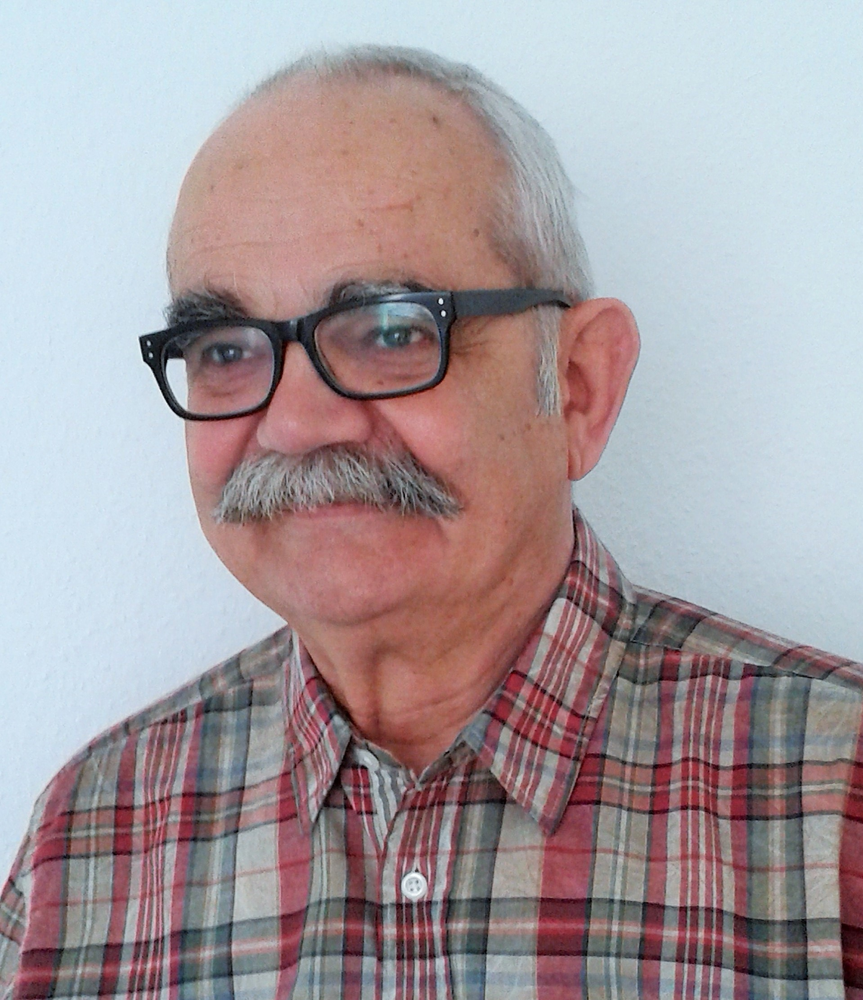

Social Angels
Das Social Angels Team setzt sich aus aktiven und ehemaligen Führungskräften aus den unterschiedlichsten Wirtschaftszweigen zusammen.Das über die Jahre gewonnene Systemwissen, die jahrelange Berufserfahrung und Fachexpertise spiegelt sich in der Arbeit von CSR MATCH wider.
Dipl. Verwaltungswirt,
ehemals Führungskräfteentwicklung Deustche Post/DHL
ehemals Leiter Cash Management Alcatel-Lucent Deutschland AG Treasury
Jurist
ehemals Personalleiter Landesbank Baden-Württemberg 
ehemals Personalleiter Landesbank Baden-Württemberg 
ehemals Vertriebsleiter Sika Deutschland GmbH
Diplom-Ingenieur,
ehemals IBM Produktmanager für Betriebsysteme Großrechner

ehemals Leiter Private Immobilien, Mitglied des Direktoriums
Bankhaus Ellwanger & Geiger KG
ehemals Prokurist
Bausparkasse Wüstenrot AG
Bausparkasse Wüstenrot AG
Syndikusanwältin,
ehemals Chefjuristin eines Automobilkonzerns

aktuell:
Bereichsleiter Informationstechnologie / CIO
 Bundesrepublik Deutschland - Finanzagentur GmbH, Bausparkasse Wüstenrot AG 
 Bundesrepublik Deutschland - Finanzagentur GmbH, Bausparkasse Wüstenrot AG 
Dipl. Betriebswirt (BA),
ehemals Mitglied der Geschäftsleitung der Allianz Lebensversicherung AG
ehemals stell. Filialdirektor Kreissparkasse Ludwigsburg
Diplom-Ökonom,
Marketing, Organisation & Industrial Design Gründer von MSU Consulting GmbH
Business Administration
ehemals Partner bei Deloitte Consulting und
COO bei OphthalmoPharma AG